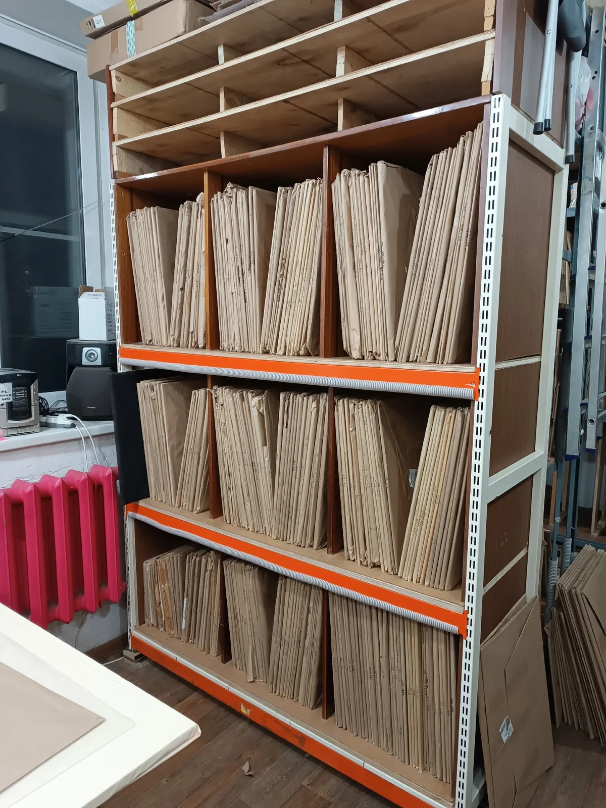

01 / OUTER
Внешнее стекло духовки
Окрашивание термостойкой краской стемалит (чёрный, белый) по периметру либо тонировочная плёнка с вырезом под окошко.
Изготавливаем жаропрочные стекла для любых духовых шкафов, плит, СВЧ-печей, керамических поверхностей и полок холодильников — с точностью до миллиметра.
Духовые шкафы (внешние, средние, внутренние), плиты, керамические панели, СВЧ-печи и полки холодильников.
Окрашивание термостойкой краской стемалит (чёрный, белый) по периметру либо тонировочная плёнка с вырезом под окошко.
Теплоизоляционный средний слой духовки. Удерживает жар внутри камеры и защищает внешнее стекло от перегрева.
Максимальная термостойкость для прямого контакта с жаром духовки. Точная геометрия, фаски и отверстия под крепления.
Жаропрочные стекла для варочных панелей и кухонных плит. Прочная идеальная поверхность для безопасной готовки.
Жаропрочные стекла для микроволновых печей любых марок. Точное соответствие размерам, вырезам и креплениям дверцы.
Прочное закаленное стекло точных размеров под пазы и направляющие вашего холодильника с полированной кромкой.
Внешние стекла изготавливаем с окрашиванием по периметру (чёрный или белый цвет) термостойкой краской стемалит, либо покрываем качественной тонировочной плёнкой с вырезом под смотровое окошко.
Окрашивание термостойкой краской стемалит по периметру либо покрытие тонировочной плёнкой с вырезом под смотровое окошко.
Способ отделки (стемалит / тонировочная плёнка) согласуется при заказе под вашу модель техники.
Нажмите на пункт или метку на схеме. Покажем, что важно знать до изготовления и замены стекла.

ЧЕЛЯБИНСК / НАШ СКЛАД И ПРОИЗВОДСТВОСклад и производство находятся в Челябинске. Отправляем готовые жаропрочные стекла по всей России компанией СДЭК.
Важно: с Москвой и Московской областью мы временно не работаем.
Для жителей Челябинска доступен самовывоз из мастерской по предварительному звонку.
Обратите внимание: с Москвой и Московской областью не работаем. Самовывоз в Челябинске осуществляется по предварительному согласованию времени по телефону.
Белые и чёрные рамки, прозрачные окошки, крепления и кромки. Показываем детали так, как они выглядят в мастерской.
Наружное стекло двери духовки
Наружное стекло с прозрачным окошком
Белая панель с металлической ручкой
Чёрная рамка и отверстия для креплений
Внешние панели в мастерской
Ручка и крепление на чёрной панели
Крепление ручки и кромка стекла
Кромки и отверстия для крепежа
Стекла на складском стеллаже
Хранение и организация стекол
Наружное стекло с отверстиями и защитными уголками
Прозрачное стекло со скруглёнными углами
Край стекла и маркировка Tempered
Фотографии из мастерской. Нажмите на снимок, чтобы рассмотреть его целиком. Возможность изготовления и совместимость уточняются по модели техники.
Если корпус и механизмы исправны, замена подходящего стекла может вернуть технике привычный вид. Без покупки нового духового шкафа.
Узнать, какое стекло подойдёт ↗Иллюстрация результата. Не используйте технику с повреждённым стеклом.
Хорошую деталь замечают не только глазами. Она должна точно подходить вашей технике.
Скругления, обработка кромки и отверстия — не декоративные мелочи. От них зависит точная посадка стекла в дверце.
Внешнее и внутреннее стекло работают в разных условиях. Подбираем деталь по назначению, а не только по размеру.
Защитные слои, фиксация внутри коробки и внимание к кромкам. Условия упаковки и доставки согласуем перед оформлением заказа.
Укажите бренд и модель с заводской таблички или размеры стекла.
Уточним тип стекла, крепления и совместимость с вашей техникой.
Обсудим стоимость и доставку. Вы решите, подходит ли вам предложение.

Не обязательно менять всё, чтобы снова наслаждаться любимым пространством. Иногда достаточно одной правильной детали.
Начать с подбора стекла ↗Изготавливаем жаропрочные стекла для духовых шкафов (внутренние, средние, внешние), плит, керамических поверхностей, СВЧ-печей и полок холодильников по вашим размерам или модели техники.
Для оперативного общения напишите нам в мессенджер Макс. Также вы можете изучить наши предложения и отзывы на Авито.
Мастерская в Челябинске · Отправка СДЭК по РФ (кроме Москвы и МО)
Мы отправляем заказы компанией СДЭК по всей России, кроме Москвы и Московской области. Склад и мастерская находятся в Челябинске — вы можете забрать заказ самовывозом по предварительному звонку.
Мы изготавливаем все три слоя для духовых шкафов:
• Внутренние — максимальная жаропрочность для прямого контакта с высокой температурой камеры.
• Промежуточные (средние) — термоизоляционный слой, снижающий нагрев дверцы.
• Внешние — лицевые стекла с точной посадкой и декоративной отделкой.
Внешние стекла изготавливаем с окрашиванием по периметру термостойкой краской стемалит (чёрный или белый цвета), либо покрываем качественной тонировочной плёнкой с вырезом под смотровое окошко.
Да! Мы занимаемся изготовлением жаропрочных стекол для всех видов духовых шкафов, плит, керамических поверхностей, СВЧ-печей (микроволновок), а также прочных полок для холодильников по индивидуальным размерам.
Обычно заводская табличка (шильдик) находится на рамке корпуса за открытой дверцей духовки или снизу варочной панели. Найдите полное название модели и сервисный номер — они помогут точно подобрать или изготовить деталь.
Категорически нет. Обычное стекло мгновенно треснет от перепада температур. Мы используем специализированное жаропрочное стекло, рассчитанное на экстремальный нагрев и кухонные нагрузки.